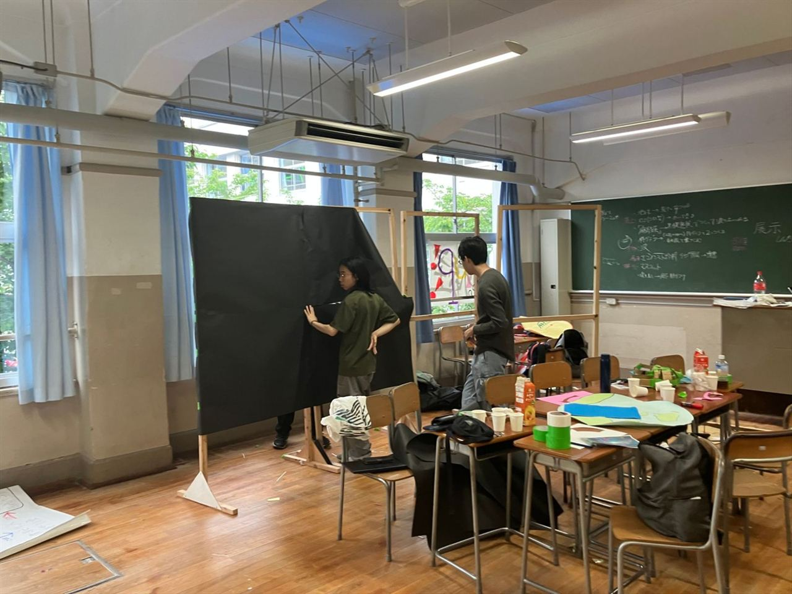
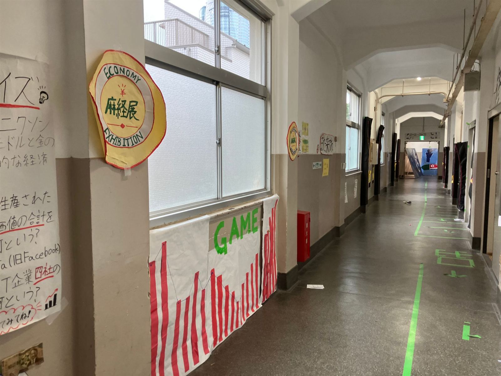
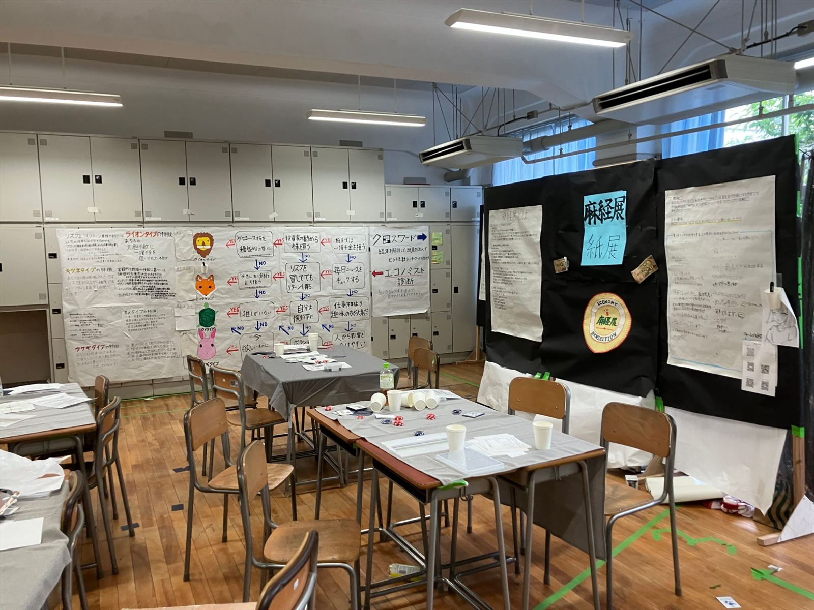

2026 年の展示から
準備から本番の記録まで。




AZAKEI（麻経）の 1 年を、1 ページにまとめました。協賛を考えてくださっている方にも、はじめての方にも、まずここから。
A4 の報告書の形で保存できます
教室を 3 日間、経済を遊びながら体験する展示会場に変え、学校の外のコンテストにも挑んだ 1 年でした。展示もポスターも紙幣も、部員の手づくりです。
文化祭「麻布経済展」、3 日間の来場者
クイズ・カードゲーム・クロスワード・診断・討論・対談
「本日の億万長者」の 1 位。スタートの 24 倍
挑戦しているコンテスト（ビジネスプラン・グランプリ、日経ストックリーグ）
部員（2025 年 12 月時点）
Web の経済用語ミニ辞典
Web の経済ラボ（シミュレーターとゲーム）
「麻布経済展」の構想から、麻布中学校・高等学校の経済系同好会として生まれました。
活動や文化祭のことを、Web でも発信しはじめました。次の文化祭の企画づくりもこの月から。
億万長者クイズ、エコノミスト診断、文化祭投票、経済ラボを Web でも遊べるように。
ビジネスプラン・グランプリの結果発表（11 月中）。ストックリーグはヒアリングの時期。次の麻布経済展は、展示の細かい内容を詰めています。
準備から本番の記録まで。



文化祭で人気だった展示を、登録なし・無料で、だれでも遊べるようにしています。